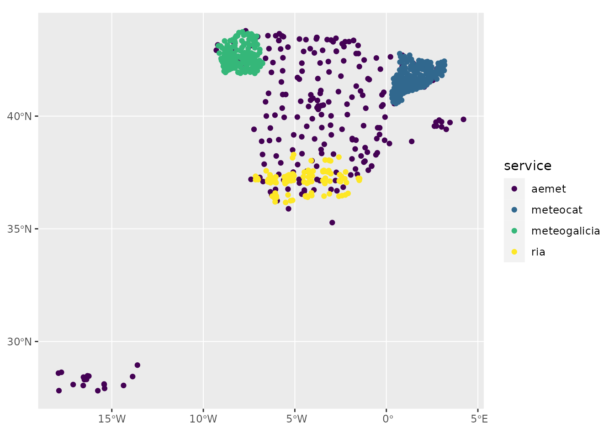
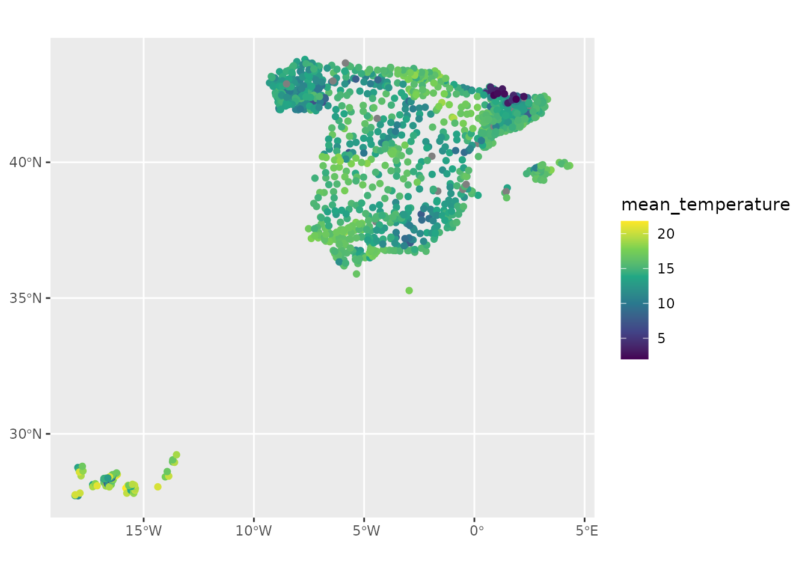

library(meteospain)
library(sf)
#> Linking to GEOS 3.12.1, GDAL 3.8.4, PROJ 9.4.0; sf_use_s2() is TRUE
library(purrr)
library(dplyr)
#>
#> Attaching package: 'dplyr'
#> The following objects are masked from 'package:stats':
#>
#> filter, lag
#> The following objects are masked from 'package:base':
#>
#> intersect, setdiff, setequal, union
library(ggplot2)
library(units)
#> udunits database from /usr/share/xml/udunits/udunits2.xml
# provide keys for aemet and meteocat if not done already
# keyring::key_set('aemet')
# keyring::key_set('meteocat')meteospain aims to return stations data in a compatible
format between services. This means:
- Names of meteorological and metadata variables are standardized between services and temporal resolutions.
- Units of numerical variables are standardized between services.
- Same output format for all services, an
sfobject.
This ease combining data from different services. Let’s see an example.
April 2020 daily data
We are gonna download daily data for April, 2020 for all services providing this information, and combine them in one object:
Don’t forget to store the keys for AEMET and MeteoCat if not done already (see code above)
aemet_daily <- get_meteo_from(
'aemet', aemet_options(
'daily', start_date = as.Date('2020-04-16'), end_date = as.Date('2020-04-30'),
api_key = keyring::key_get('aemet')
)
)
#> ℹ © AEMET. Autorizado el uso de la información y su reproducción citando a
#> AEMET como autora de la misma.
#> https://www.aemet.es/es/nota_legal
meteocat_daily <- get_meteo_from(
'meteocat',
meteocat_options('daily', start_date = as.Date('2020-04-16'), api_key = keyring::key_get('meteocat'))
)
#> iterating ■■■ 7% | ETA: 18s
#> iterating ■■■■ 11% | ETA: 17s
#> iterating ■■■■■■■■■■ 30% | ETA: 12s
#> iterating ■■■■■■■■■■■■■■■■■ 52% | ETA: 8s
#> iterating ■■■■■■■■■■■■■■■■■■■■■■ 70% | ETA: 5s
#> iterating ■■■■■■■■■■■■■■■■■■■■■■■■■■■■■■■ 100% | ETA: 0s
#> ℹ Data provided by meteo.cat © Servei Meteorològic de Catalunya
#> https://www.meteo.cat/wpweb/avis-legal/#info
meteogalicia_daily <- get_meteo_from(
'meteogalicia',
meteogalicia_options('daily', start_date = as.Date('2020-04-16'), end_date = as.Date('2020-04-30'))
)
#> ℹ A información divulgada a través deste servidor ofrécese gratuitamente aos
#> cidadáns para que poida ser
#> utilizada libremente por eles, co único compromiso de mencionar expresamente a
#> MeteoGalicia e á
#> Consellería de Medio Ambiente, Territorio e Vivenda da Xunta de Galicia como
#> fonte da mesma cada vez
#> que as utilice para os usos distintos do particular e privado.
#> https://www.meteogalicia.gal/aviso-legal
ria_daily <- get_meteo_from(
'ria',
ria_options('daily', start_date = as.Date('2020-04-16'), end_date = as.Date('2020-04-30'))
)
#> iterating ■■ 5% | ETA: 20s
#> iterating ■■■■■ 12% | ETA: 19s
#> iterating ■■■■■■■■■■■ 35% | ETA: 10s
#> iterating ■■■■■■■■■■■■■■■■■ 52% | ETA: 8s
#> iterating ■■■■■■■■■■■■■■■■■■■■■■■ 73% | ETA: 4s
#> iterating ■■■■■■■■■■■■■■■■■■■■■■■■■■■■■■ 95% | ETA: 1s
#> iterating ■■■■■■■■■■■■■■■■■■■■■■■■■■■■■■■ 100% | ETA: 0s
#> ✖ Some stations didn't return data:
#> https://www.juntadeandalucia.es/agriculturaypesca/ifapa/riaws/datosdiarios/forceEt0/21/104/2020-04-16/2020-04-30:
#> HTTP 404 Not Found.
#> https://www.juntadeandalucia.es/agriculturaypesca/ifapa/riaws/datosdiarios/forceEt0/18/9/2020-04-16/2020-04-30:
#> HTTP 404 Not Found.
#> https://www.juntadeandalucia.es/agriculturaypesca/ifapa/riaws/datosdiarios/forceEt0/29/3/2020-04-16/2020-04-30:
#> HTTP 404 Not Found.
#> https://www.juntadeandalucia.es/agriculturaypesca/ifapa/riaws/datosdiarios/forceEt0/29/5/2020-04-16/2020-04-30:
#> HTTP 404 Not Found.
#> https://www.juntadeandalucia.es/agriculturaypesca/ifapa/riaws/datosdiarios/forceEt0/21/1/2020-04-16/2020-04-30:
#> HTTP 404 Not Found.
#> https://www.juntadeandalucia.es/agriculturaypesca/ifapa/riaws/datosdiarios/forceEt0/41/4/2020-04-16/2020-04-30:
#> HTTP 404 Not Found.
#> https://www.juntadeandalucia.es/agriculturaypesca/ifapa/riaws/datosdiarios/forceEt0/21/106/2020-04-16/2020-04-30:
#> HTTP 404 Not Found.
#> https://www.juntadeandalucia.es/agriculturaypesca/ifapa/riaws/datosdiarios/forceEt0/23/9/2020-04-16/2020-04-30:
#> HTTP 404 Not Found.
#> https://www.juntadeandalucia.es/agriculturaypesca/ifapa/riaws/datosdiarios/forceEt0/41/1/2020-04-16/2020-04-30:
#> HTTP 404 Not Found.
#> https://www.juntadeandalucia.es/agriculturaypesca/ifapa/riaws/datosdiarios/forceEt0/23/10/2020-04-16/2020-04-30:
#> HTTP 404 Not Found.
#> https://www.juntadeandalucia.es/agriculturaypesca/ifapa/riaws/datosdiarios/forceEt0/23/13/2020-04-16/2020-04-30:
#> HTTP 404 Not Found.
#> https://www.juntadeandalucia.es/agriculturaypesca/ifapa/riaws/datosdiarios/forceEt0/21/12/2020-04-16/2020-04-30:
#> HTTP 404 Not Found.
#> https://www.juntadeandalucia.es/agriculturaypesca/ifapa/riaws/datosdiarios/forceEt0/4/3/2020-04-16/2020-04-30:
#> HTTP 404 Not Found.
#> https://www.juntadeandalucia.es/agriculturaypesca/ifapa/riaws/datosdiarios/forceEt0/14/3/2020-04-16/2020-04-30:
#> HTTP 404 Not Found.
#> https://www.juntadeandalucia.es/agriculturaypesca/ifapa/riaws/datosdiarios/forceEt0/21/107/2020-04-16/2020-04-30:
#> HTTP 404 Not Found.
#> https://www.juntadeandalucia.es/agriculturaypesca/ifapa/riaws/datosdiarios/forceEt0/18/4/2020-04-16/2020-04-30:
#> HTTP 404 Not Found.
#> https://www.juntadeandalucia.es/agriculturaypesca/ifapa/riaws/datosdiarios/forceEt0/11/8/2020-04-16/2020-04-30:
#> HTTP 404 Not Found.
#> https://www.juntadeandalucia.es/agriculturaypesca/ifapa/riaws/datosdiarios/forceEt0/11/3/2020-04-16/2020-04-30:
#> HTTP 404 Not Found.
#> https://www.juntadeandalucia.es/agriculturaypesca/ifapa/riaws/datosdiarios/forceEt0/11/9/2020-04-16/2020-04-30:
#> HTTP 404 Not Found.
#> https://www.juntadeandalucia.es/agriculturaypesca/ifapa/riaws/datosdiarios/forceEt0/4/9/2020-04-16/2020-04-30:
#> HTTP 404 Not Found.
#> https://www.juntadeandalucia.es/agriculturaypesca/ifapa/riaws/datosdiarios/forceEt0/41/6/2020-04-16/2020-04-30:
#> HTTP 404 Not Found.
#> https://www.juntadeandalucia.es/agriculturaypesca/ifapa/riaws/datosdiarios/forceEt0/41/14/2020-04-16/2020-04-30:
#> HTTP 404 Not Found.ℹ Data provided by Red de Información Agroclimática de Andalucía (RIA)
#> https://www.juntadeandalucia.es/agriculturaypesca/ifapa/riaweb/web/Now we have all daily data for April, lets join them. We are gonna
use the purrr package to do it in one pipe.
Here we convert the data to tibble before the join, that way we are not
joining by the spatial data, but by timestamp and the stations metadata.
After the join we convert back to sf.
april_2020_spain <- list(
dplyr::as_tibble(aemet_daily),
dplyr::as_tibble(meteocat_daily),
dplyr::as_tibble(meteogalicia_daily),
dplyr::as_tibble(ria_daily)
) |>
purrr::reduce(dplyr::full_join) |>
sf::st_as_sf()
#> Joining with `by = join_by(timestamp, service, station_id, station_name,
#> station_province, altitude, mean_temperature, min_temperature, max_temperature,
#> mean_relative_humidity, min_relative_humidity, max_relative_humidity,
#> precipitation, mean_wind_speed, max_wind_speed, max_atmospheric_pressure,
#> min_atmospheric_pressure, geometry)`
#> Joining with `by = join_by(timestamp, service, station_id, station_name,
#> station_province, altitude, mean_temperature, min_temperature, max_temperature,
#> mean_relative_humidity, min_relative_humidity, max_relative_humidity,
#> precipitation, mean_wind_speed, max_wind_speed, insolation, geometry,
#> mean_wind_direction, max_wind_direction, mean_atmospheric_pressure,
#> reference_evapotranspiration)`
#> Joining with `by = join_by(timestamp, service, station_id, station_name,
#> station_province, altitude, mean_temperature, min_temperature, max_temperature,
#> mean_relative_humidity, min_relative_humidity, max_relative_humidity,
#> precipitation, mean_wind_speed, max_wind_speed, geometry, mean_wind_direction,
#> max_wind_direction)`
april_2020_spain
#> Simple feature collection with 22197 features and 43 fields (with 150 geometries empty)
#> Geometry type: POINT
#> Dimension: XY
#> Bounding box: xmin: -18.115 ymin: 27.66528 xmax: 4.323889 ymax: 43.78611
#> Geodetic CRS: WGS 84
#> # A tibble: 22,197 × 44
#> timestamp service station_id station_name station_province altitude
#> <dttm> <chr> <chr> <chr> <chr> [m]
#> 1 2020-04-16 00:00:00 aemet 0009X "ALFORJA" TARRAGONA 406
#> 2 2020-04-16 00:00:00 aemet 0016A "REUS AEROP… TARRAGONA 71
#> 3 2020-04-16 00:00:00 aemet 0016B "REUS (CENT… TARRAGONA 118
#> 4 2020-04-16 00:00:00 aemet 0034X "VALLS" TARRAGONA 233
#> 5 2020-04-16 00:00:00 aemet 0042Y "TARRAGONA " TARRAGONA 55
#> 6 2020-04-16 00:00:00 aemet 0061X "PONTONS" BARCELONA 632
#> 7 2020-04-16 00:00:00 aemet 0066X "VILAFRANCA… BARCELONA 177
#> 8 2020-04-16 00:00:00 aemet 0073X "SITGES" BARCELONA 58
#> 9 2020-04-16 00:00:00 aemet 0076 "BARCELONA … BARCELONA 4
#> 10 2020-04-16 00:00:00 aemet 0092X "BERGA" BARCELONA 682
#> # ℹ 22,187 more rows
#> # ℹ 38 more variables: mean_temperature [°C], min_temperature [°C],
#> # max_temperature [°C], mean_relative_humidity [%],
#> # min_relative_humidity [%], max_relative_humidity [%],
#> # precipitation [L/m^2], wind_direction [°], mean_wind_speed [m/s],
#> # max_wind_speed [m/s], insolation [h], max_atmospheric_pressure [hPa],
#> # min_atmospheric_pressure [hPa], geometry <POINT [°]>, …We can visualize the data, only one day.
By service
april_2020_spain |>
dplyr::filter(lubridate::day(timestamp) == 25) |>
units::drop_units() |>
ggplot(aes(colour = service)) +
geom_sf() +
scale_colour_viridis_d()
By one variable
april_2020_spain |>
dplyr::filter(lubridate::day(timestamp) == 25) |>
units::drop_units() |>
ggplot(aes(colour = mean_temperature)) +
geom_sf() +
scale_colour_viridis_c()